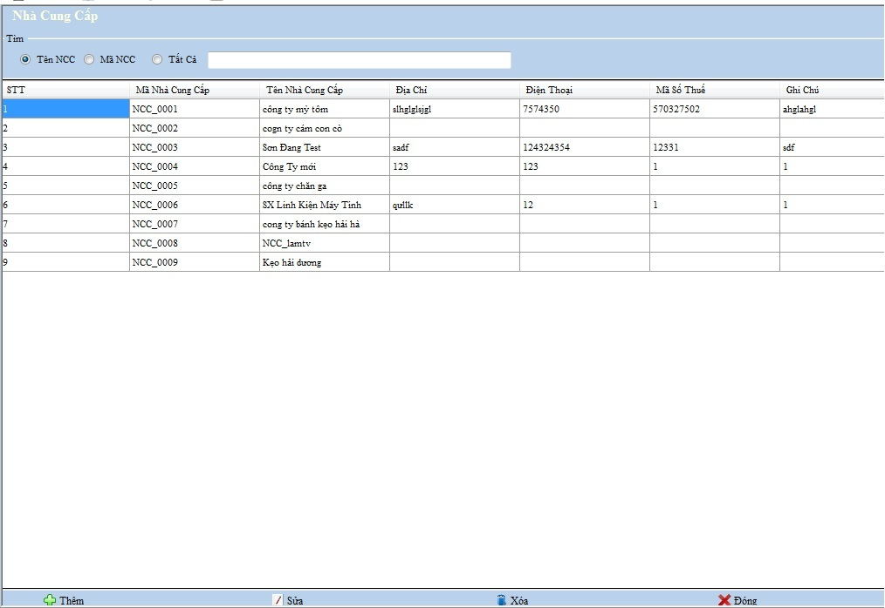
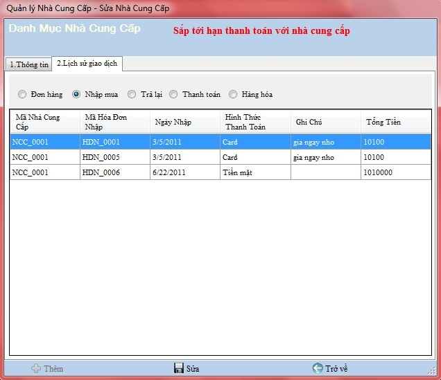

- Bạn là người quản lý, bạn muốn quản lý những nhà cung cấp thân thiết của doanh nghiệp mình thật chi tiết, thì bạn hãy sử dụng chức năng này để quản lý nhà cung cấp một cách hiệu quả nhất .
Cách thao tác với Danh mục quản lý nhà cung cấp:
Vào Hệ thống -> Danh mục nhà cung cấp

Thanh tiêu đề: Chứa tên của danh mục đang làm việc.
Tìm kiếm: Chọn loại muốn tìm kiếm , bạn nhập vào tên hàng cần tìm .
Thanh công cụ : Chứa các công cụ phục vụ việc quản lý,theo dõi, bổ sung nhà cung cấp
a.Thêm mới
Chọn nút thêm và khai báo các thông tin trên hộp thoại xuất hiện .
- Không thể chọn trang 2. Lịch sử giao dịch
để xem các danh mục có liên quan đến khách hàng vì Nhà Cung Cấp khi đó đang được tạo mới và các giao dịch chưa được thiết lập.

Điền thông tin của danh mục theo hướng dẫn,những ô bắt buộc phải nhập nếu bạn để trống hệ thống sẽ báo lỗi như hình sau:

VD: Bạn cần phải nhập họ tên khách hàng...
Chọn Thêm để chấp nhận thêm mới
b.Sửa
Chọn hàng cần sửa và đúp chuột vào nút Sửa ở thanh công cụ dưới hoặc kích đúp vào Nhà cung cấp hiện thời, hộp thoại sẽ xuất hiện và sửa lại thông tin cho hàng đang chọn.
- Dư nợ được tổng hợp từ các giao dịch với Nhà cung cấp
- Ở đây, sẽ có những nợ Nhà cung cấp gần quá hạn thanh toán . Hệ thống sẽ hiển thị để nhắc nhở người quản lý, sẽ có giao diện như hình sau:

- Nhập dữ liệu vào ô cần sửa trên danh mục nhà cung cấp
- Chọn nút Sửa ở thanh công cụ dưới để hoàn thành thao tác
c.Xóa
Chọn hàng cần xóa và đúp chuột chọn nút Xóa
d.Lịch sử giao dịch
Bước 1: Chọn hàng cần xem chi tiết lịch sử giao dịch, kích đúp vào nhà cung cấp hiện thời
Bước 2: Chọn trang 2. Lịch sử giao dịch

Bước 3: Chọn Đơn hàng để xem thông tin chi tiết danh sách giao dịch đặt hàng Nhà cung cấp .
Bước 4: Chọn Nhập mua để xem thông tin chi tiết danh sách giao dịch nhập hàng với Nhà cung cấp .
Bước 5: Chọn Trả lại để xem thông tin chi tiết danh sách giao dịch trả lại Nhà cung cấp .
Bước 6: Chọn Thanh toán để xem thông tin chi tiết danh sách giao dịch thanh toán với Nhà cung cấp .
Bước 7: Chọn Hàng hóa để xem thông tin chi tiết danh sách hàng hóa đã mua của Nhà cung cấp .
Bước 8: Chọn Trở về ở thanh công cụ dưới để trở về Danh mục quản lý nhà cung cấp.